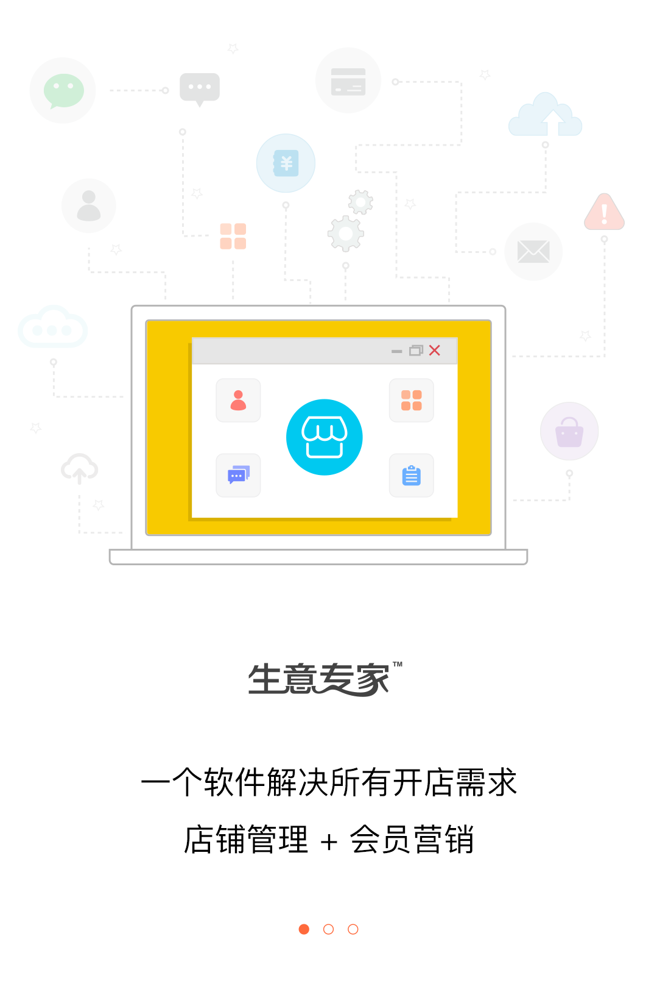
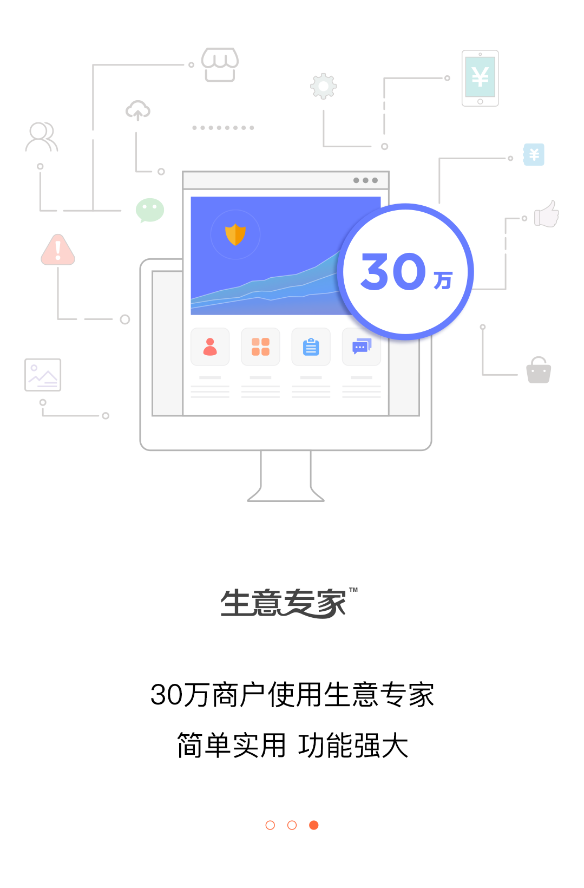

<ion-header class="ion-no-border">
  <ion-toolbar>
    <ion-buttons slot="end" [hidden]="!showSkip" (click)="onSkip()">
      <ion-button>
         跳过
      </ion-button>
    </ion-buttons>
  </ion-toolbar>
</ion-header>

<ion-content>
  <ion-slides pager="true" #slides (ionSlideWillChange)="onSlideWillChange()">
    <ion-slide class="ion-align-items-start">
      <div>
         
      </div>
    </ion-slide>
    <ion-slide class="ion-align-items-start">
       
    </ion-slide>
    <ion-slide class="ion-align-items-start">
      
     <ion-grid class="fixed-bottom">
       <ion-row>
         <ion-col>
           <ion-button color="primary" fill="outline" expand="block">登录</ion-button>
         </ion-col>
         <ion-col>
           <!-- 为ion-button元素添加routerLink属性 -->
           <ion-button color="primary" expand="block" routerLink="/passport/signup">注册</ion-button>
         </ion-col>
       </ion-row>
     </ion-grid>
    </ion-slide>
  </ion-slides>
</ion-content>
